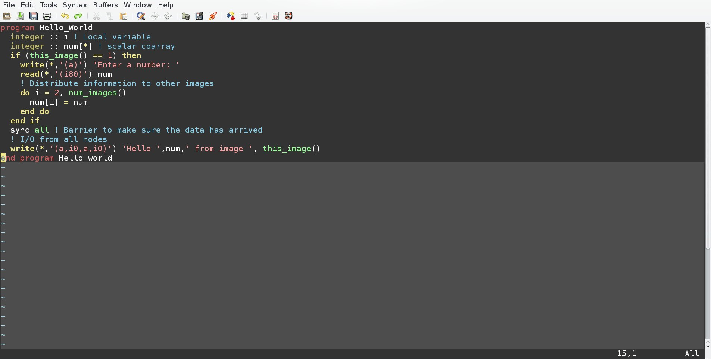
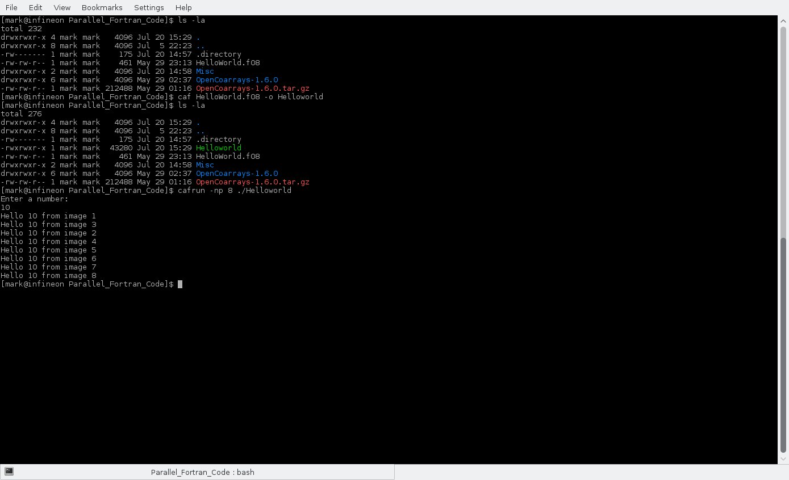

Description
Introduction
Fortran code that implements parallel programming.
Simple Program to Demonstrate Parallel Programming using Coarrays

This is a simple "Hello World" type program that can be used to test out multiprocessor execution. It creates a scalar variable that exists in every image. It then reads in an integer from the user and assigns the read in integer into every corresponding scalar variable in every image. After letting each image synchronize, it prints out the read in variable and the image number.
Program Run - Simple "Hello World" Type Fortran Program using Coarrays

As can be seen from the program compilation and exectution above, there are a number of differences in the process when compared to standard compilation and execution. The program is compiled with a coarray aware compiler "caf". It is run with a coarray aware loader named "cafrun." One of the options to cafrun is the number of "images" to be created when running the program. This program was executed on a quad-core processor, but the number of images is 8. Each image is provided with the integer the user entered, which in this case is 10. The program then executes each image with the user entered integer and provides an output. It is interesting that the number of images does not have to equal the number of cores or processors.